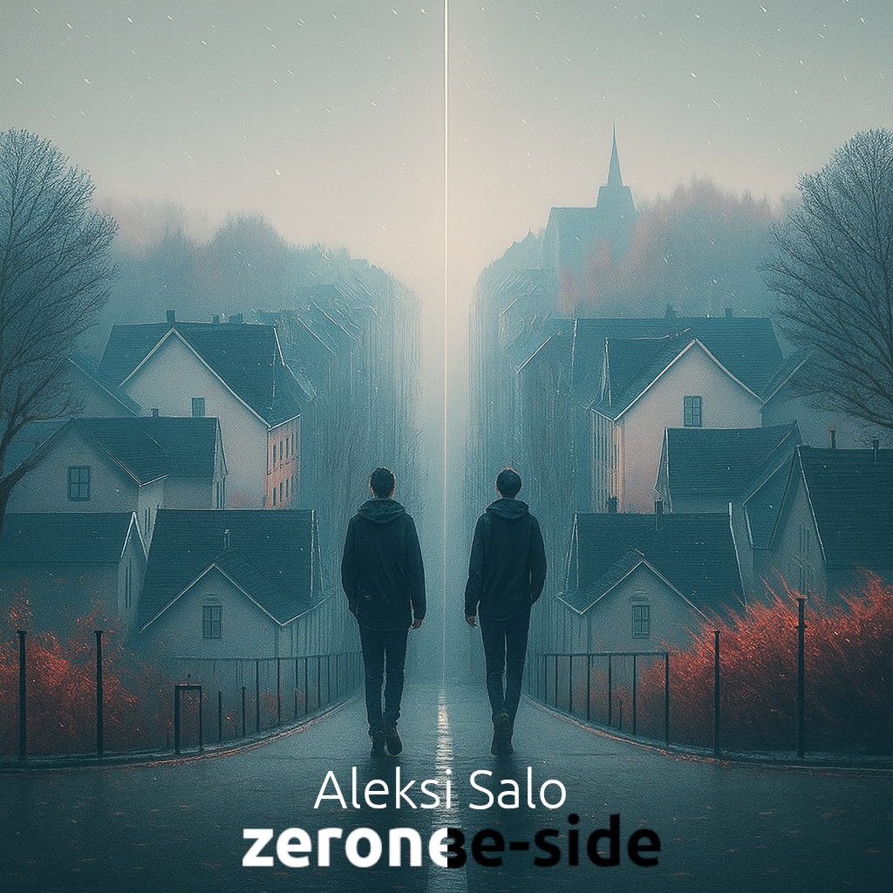

Zerone
Post-rock · 2025 · 8 tracks
A winter-long arc from autumn light to the frostbitten edge of spring — guitars, slow crescendos and quiet resistance to change.
I’m a Nordic-grown full-stack developer who spends half his time writing code and the other half pretending it’s still reasonable to juggle music, lyrics, and the occasional book project. When I’m not debugging something (technical or existential), I write instrumental stories, slow indie pieces, and other things that usually take more tea than talent.
Instrumental stories from the north — slowly written between code, tea and Kaamos.
Post-rock · 2025 · 8 tracks
A winter-long arc from autumn light to the frostbitten edge of spring — guitars, slow crescendos and quiet resistance to change.

Post-rock / alt · 8 tracks
Companion pieces, experiments and alternate moods orbiting the main Zerone cycle — quieter corners, side quests and crooked reflections.